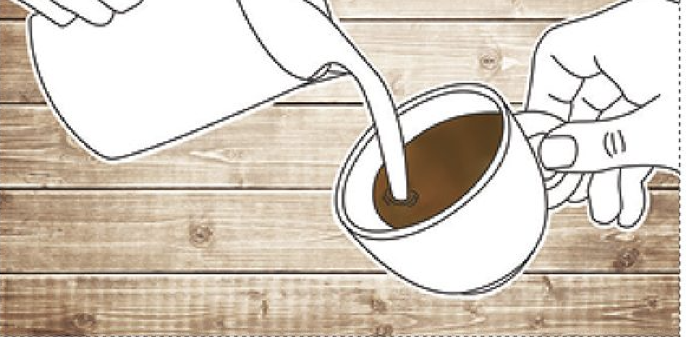
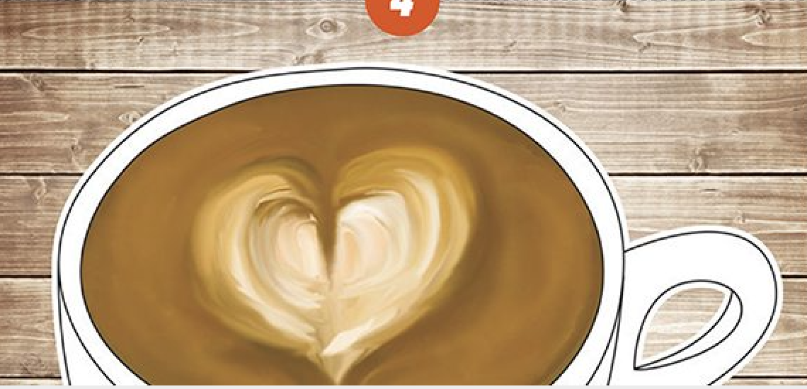

- Image of milk frother
Latte Art Instructable
Step 1- Pour the milk
The first pour of milk into the latte is to add a base for the latte are
Step 2- Begin to tilt the cup
In step two you should tilt the cup slightly to an angle to create the perfect angle for milk lines to form.

Step 3- Moving the cup
in this step you will work with rotating the cup to create the desired image. You will learn that different hand motions create different deisgns.

Step 4- Final Product
Take a snapshop of your new latte art skill! Practice using different strokes and angles to create new designs. Use food coloring as desired to add color.
Learn more about Latte Art
<